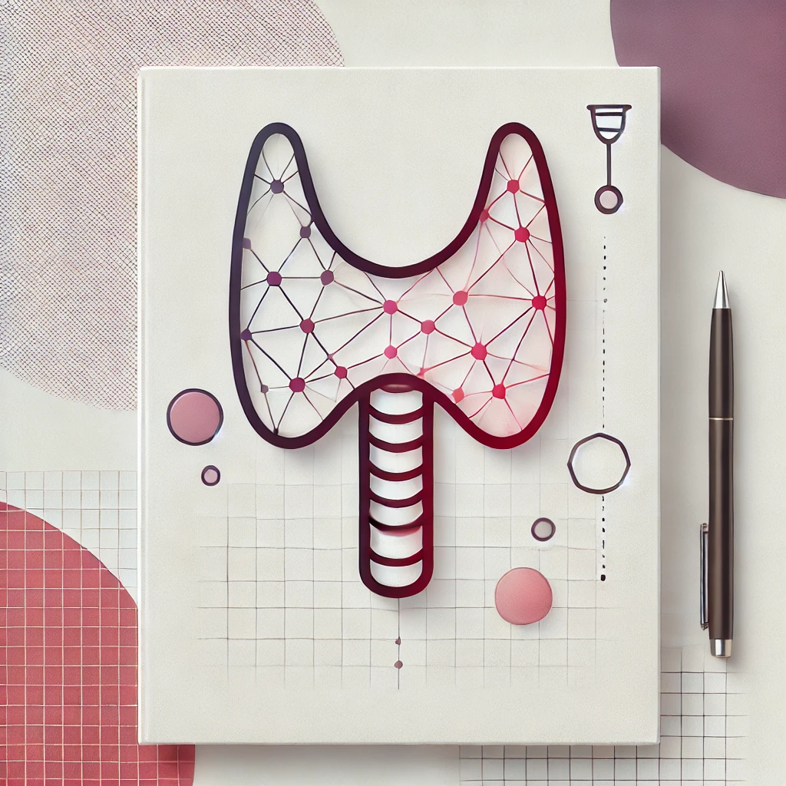
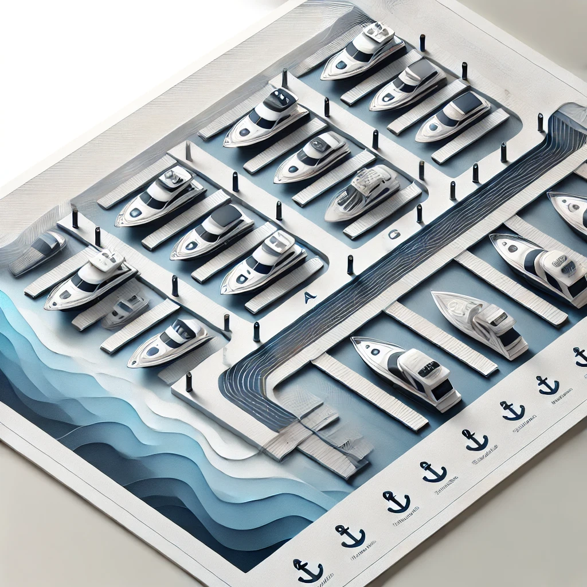

MY WORK
Here are some of my latest work.
Click on the images to see more details about the project




Passionate About Data Analysis and Data Science
I began my path in Data Analysis about three years ago through extensive research and introductory courses in the field. To enhance my knowledge, I started a Master's in Biostatistics and Bioinformatics Applied to Health, as well as a postgraduate degree in Data Science. As part of the master's degree, I enrolled in an internship as a biostatistician at a clinical trials company. This experience allowed me to develop further my analytical and programming skills in R. Currently I am honing my programming skills in data analytics in an online course designed by Google. Although my experience is mainly academic at the moment, I am motivated by challenges and excited about the possibility of contributing to innovative projects and expanding my knowledge.
Hello, I'm Heitor Coelho. Outside of my professional life, I have a deep passion for exploring new technologies and staying updated with the latest advancements in data science. My curiosity drives me to continually learn and apply new techniques to solve real-world problems.
In my free time, I enjoy spending moments with my family and friends, as well as taking my dog for walks in nature. These activities help me maintain a balanced life and provide fresh perspectives that I often bring into my work.
I am currently transitioning my career towards data analysis, driven by a desire to leverage my analytical skills to make impactful contributions in these fields. This decision is motivated by my passion for data-driven decision-making and my commitment to continuous learning and professional growth.
I am eager to leverage my skills and experiences in new challenges and look forward to opportunities where I can contribute to innovative projects, learn from others, and continue to grow as a data professional.
My Skills:
R Programming
Python
Data Analysis
SQL
Tableau
Here are some of my latest work.
Click on the images to see more details about the project
I'd love to get your feedback about my projects!
Please leave your feedback: